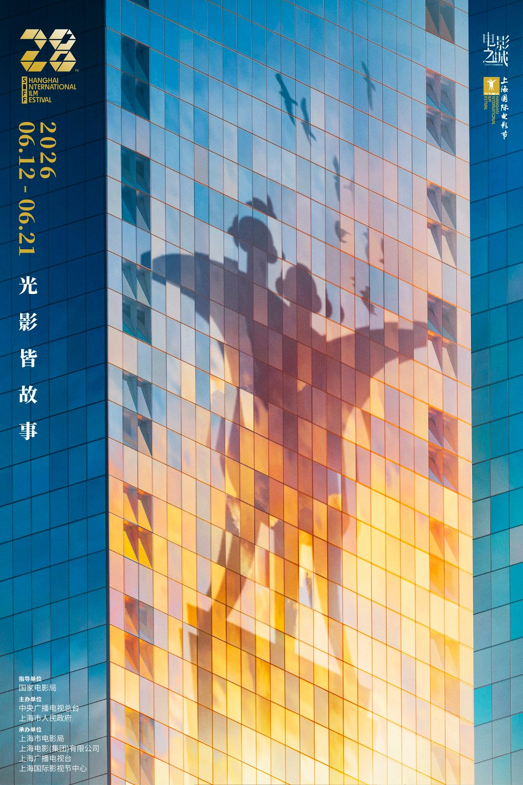
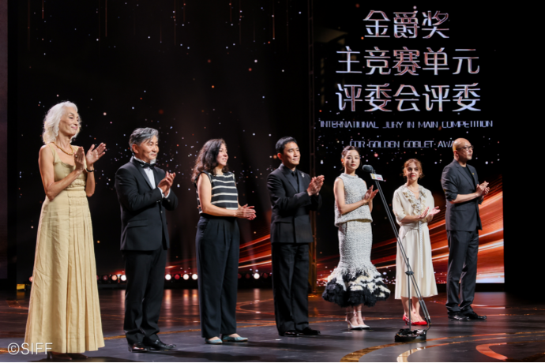
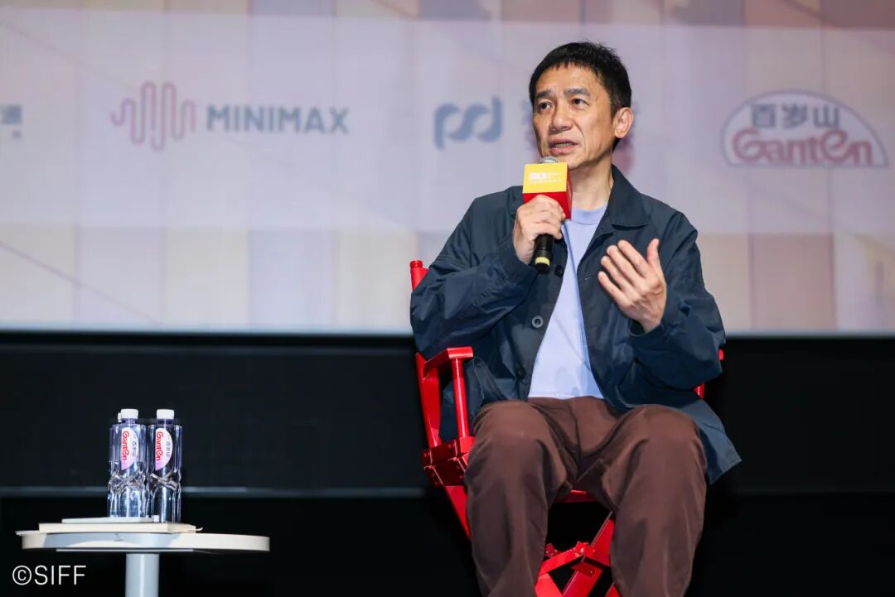
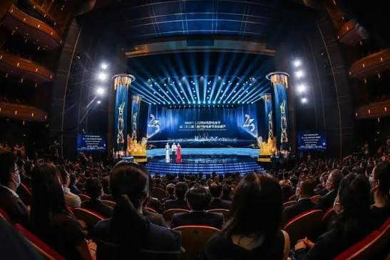
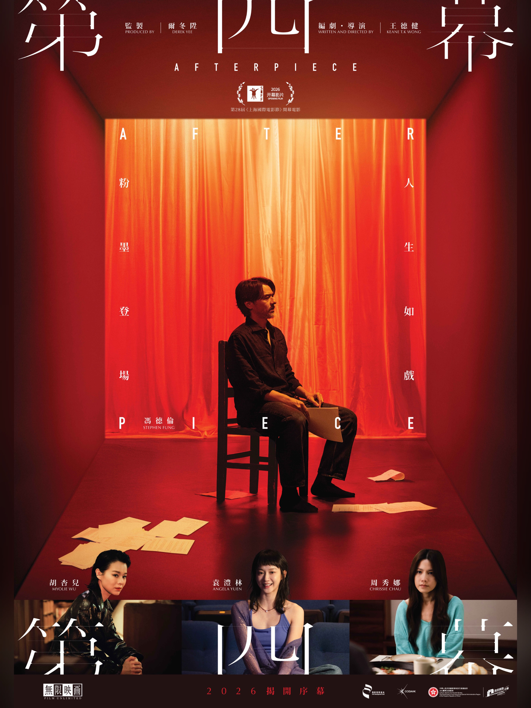
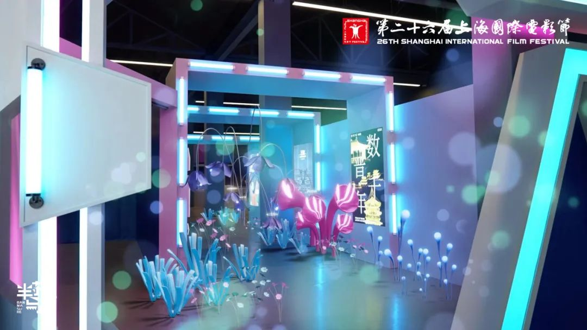

Hay ciudades que acogen un festival de cine y otras cuya identidad parece confundirse con él. Shanghái pertenece indudablemente a esta segunda categoría. Durante apenas diez días del mes de junio, una metrópolis acostumbrada a vivir a un ritmo vertiginoso reduce ligeramente su velocidad para entregarse por completo al séptimo arte. Las fachadas de los cines históricos vuelven a iluminarse, las conversaciones de los cafés giran alrededor de las películas recién proyectadas y miles de espectadores recorren la ciudad con el programa del festival cuidadosamente doblado entre las manos, tratando de encajar cuatro, cinco o incluso seis sesiones diarias.
Después de haber recorrido festivales como Cannes, Venecia, Berlín o San Sebastián, resulta inevitable establecer comparaciones. Cada uno posee una personalidad muy definida. Cannes continúa siendo el gran escaparate de la industria cinematográfica internacional. Venecia conserva una elegancia difícilmente igualable, donde la historia parece mezclarse con cada proyección. Berlín mantiene intacta su vocación política y social. Shanghái, sin embargo, transmite algo diferente. Aquí el protagonismo pertenece, por encima de todo, al público.
Lejos de las interminables discusiones sobre vestidos, alfombras rojas o campañas de premios, el Festival Internacional de Cine de Shanghái continúa construyendo su identidad alrededor de aquello que debería importar más en cualquier certamen cinematográfico: las películas y las personas que acuden a descubrirlas.
En una época en la que numerosos análisis anuncian periódicamente la desaparición de las salas de cine, basta recorrer durante unas horas los alrededores del Shanghai Film Art Center para comprender hasta qué punto esas predicciones resultan precipitadas. Las colas comienzan mucho antes de la apertura de puertas. Hay estudiantes universitarios, jubilados, familias enteras, críticos internacionales, jóvenes cineastas y espectadores que han viajado cientos de kilómetros únicamente para asistir a unas pocas proyecciones. Todos ellos comparten una misma ilusión.
Ver cine.
No parece una idea especialmente revolucionaria y, sin embargo, pocas veces se percibe con tanta intensidad como aquí.
La vigesimoctava edición del Festival Internacional de Cine de Shanghái ha confirmado definitivamente el extraordinario crecimiento que el certamen viene experimentando durante los últimos años. Más de 4.100 películas procedentes de 125 países y regiones fueron inscritas para competir en las distintas secciones del festival, estableciendo un nuevo récord de participación internacional. De ellas, más de 420 películas terminaron formando parte de la programación oficial, repartidas en alrededor de 1.600 proyecciones celebradas tanto en Shanghái como en diversas ciudades del delta del río Yangtsé.
Las cifras, sin embargo, cuentan únicamente una parte de la historia.
Mucho más revelador resulta comprobar que cerca del 84 % de las películas seleccionadas para la competición oficial fueron estrenos mundiales. En un contexto internacional donde numerosos festivales dependen cada vez más de títulos previamente exhibidos en Cannes, Berlín o Venecia, Shanghái continúa consolidándose como un auténtico punto de partida para nuevos cineastas y nuevas cinematografías.
No se trata simplemente de proyectar películas.
Se trata de descubrirlas.
Esa diferencia explica buena parte del prestigio creciente que el SIFF ha adquirido dentro del calendario cinematográfico internacional.

La ceremonia inaugural volvió a demostrar esa voluntad de combinar el enorme peso histórico del cine chino con una decidida vocación internacional. Frente al río Huangpu desfilaron cineastas llegados desde los cinco continentes mientras el Gran Teatro de Shanghái acogía una gala que evitó caer en el exceso para poner el foco donde realmente debía estar: en el cine.
Uno de los momentos más emotivos de toda la ceremonia llegó con la entrega del Premio a Toda una Trayectoria a Lisa Lu, una de las grandes figuras de la interpretación chino-estadounidense. Con más de cien años de edad, la actriz subió al escenario entre una prolongada ovación que pareció resumir décadas de admiración y respeto.
Lejos de adoptar un tono de despedida, Lisa Lu respondió con la misma vitalidad que ha caracterizado toda su carrera.
«Un premio a toda una vida no significa que vaya a retirarme».
La frase provocó sonrisas, aplausos y alguna lágrima entre los asistentes. No era únicamente una respuesta ingeniosa. Era toda una declaración de amor hacia el cine.
En un tiempo en el que la industria parece obsesionada con la velocidad, las tendencias pasajeras y la constante búsqueda de novedades, contemplar a una actriz centenaria afirmar que todavía desea seguir actuando constituye un recordatorio extraordinariamente hermoso de aquello que convierte al cine en un arte distinto.
El verdadero artista nunca deja de crear.
La otra gran figura homenajeada durante la gala fue Zhang Yimou, distinguido con el Premio a la Contribución Destacada al Cine Chino. Pocas filmografías han contribuido tanto a construir la imagen internacional del cine chino contemporáneo como la del director de Sorgo Rojo, La linterna roja, ¡Vivir! o Hero.
Más allá del reconocimiento individual, su presencia simbolizaba también el diálogo constante que el festival mantiene entre generaciones. Shanghái parece haber comprendido que el futuro del cine únicamente puede construirse respetando su pasado. No existe una ruptura entre ambos. Existe continuidad.
Y quizá esa sea una de las mayores virtudes del SIFF.
Si hubo una figura que simbolizó el carácter internacional de esta edición, esa fue la del presidente del jurado, Tony Leung Chiu-wai. Pocos actores han logrado construir una carrera tan respetada tanto dentro como fuera de Asia. Su rostro permanece inevitablemente ligado a las películas de Wong Kar-wai, especialmente Deseando amar, 2046 y Happy Together, aunque reducir su trayectoria únicamente a estas colaboraciones supondría olvidar décadas de trabajo en algunos de los títulos más importantes del cine hongkonés contemporáneo.
Leung presidió un jurado formado por cineastas de procedencias extraordinariamente diversas. La directora georgiana Déa Kulumbegashvili, la productora tunecina Dora Bouchoucha, el director mexicano Fernanda Valadez, el realizador kirguís Aktan Arym Kubat, el director chino Guan Hu y la actriz Xin Zhilei completaban un grupo que reflejaba con bastante precisión la voluntad del festival de reunir sensibilidades cinematográficas muy distintas bajo una misma conversación.
Durante una de las clases magistrales organizadas por el festival, Tony Leung pronunció una frase que permaneció resonando durante el resto de la semana. Afirmó que nunca había intentado convertirse en un actor espectacular. Su prioridad siempre había sido comprender a los personajes desde dentro, escuchar antes que hablar y confiar en la fuerza de los pequeños gestos antes que en las grandes explosiones emocionales.
Resulta curioso comprobar cómo esa filosofía interpretativa coincide precisamente con aquello que convierte muchas de sus películas en obras tan memorables. En un cine contemporáneo cada vez más preocupado por impresionar constantemente al espectador mediante estímulos continuos, Leung sigue reivindicando el silencio como una de las herramientas narrativas más poderosas.
Quizá por eso continúe siendo uno de esos actores capaces de llenar la pantalla sin apenas levantar la voz.

Las clases magistrales volvieron a convertirse en uno de los grandes atractivos paralelos del festival. Más allá de la competición oficial, el SIFF demuestra cada año un notable esfuerzo por construir espacios donde el público pueda escuchar directamente a algunos de los grandes nombres del cine internacional. No se trata únicamente de promocionar películas recientes. Se trata de reflexionar sobre el propio oficio cinematográfico.
Especialmente interesante resultó la conversación mantenida por el compositor húngaro Mihály Víg, colaborador habitual de Béla Tarr y autor de algunas de las bandas sonoras más hipnóticas del cine europeo contemporáneo. Tras la proyección de El caballo de Turín, Víg explicó con enorme sencillez su manera de enfrentarse a la creación musical.
«Espero en silencio hasta que aparece la inspiración».
En una época dominada por la inmediatez, escuchar semejante afirmación resulta casi subversivo. Su intervención terminó convirtiéndose en una reflexión sobre la paciencia, el tiempo y la creación artística, conceptos que también parecen definir buena parte del cine de Béla Tarr.
Otra de las sesiones más concurridas estuvo protagonizada por el director singapurense Anthony Chen, quien animó a los jóvenes realizadores presentes en la sala a mantenerse fieles a su propia visión cinematográfica incluso cuando esta parezca ir contra las tendencias del momento. Resultó reconfortante comprobar que, entre tantas conversaciones sobre inteligencia artificial, plataformas digitales y nuevos modelos de distribución, todavía hubiera espacio para hablar simplemente de honestidad artística.
Sin embargo, si existe algo que diferencia verdaderamente al Festival Internacional de Cine de Shanghái de otros grandes certámenes internacionales, es su público.
En Cannes es habitual encontrarse con productores negociando futuras coproducciones mientras esperan para entrar en una proyección. En Berlín predominan periodistas, programadores y representantes institucionales. En Shanghái sucede algo diferente. La inmensa mayoría de las butacas pertenecen a espectadores que han comprado su entrada únicamente por el placer de descubrir una película.
Ese detalle modifica completamente la atmósfera del festival.
Las conversaciones a la salida de las salas no giran alrededor del potencial recorrido comercial de una película ni de sus posibilidades durante la próxima temporada de premios. Se habla de escenas concretas, de personajes, de finales inesperados y de emociones compartidas. Se discute sobre cine con una naturalidad que resulta contagiosa.
Pocas veces he visto semejante entusiasmo colectivo.
Las entradas para muchas proyecciones se agotaron apenas unos minutos después de ponerse a la venta. Las redes sociales comenzaron inmediatamente a llenarse de intercambios improvisados entre espectadores que buscaban desesperadamente una localidad para aquella película cuya demanda había superado todas las previsiones.
Más sorprendente todavía era comprobar el absoluto respeto que reinaba dentro de las salas.
Los teléfonos móviles prácticamente desaparecían durante las proyecciones. El silencio era absoluto. Incluso los aplausos parecían reservarse cuidadosamente para el momento exacto en que aparecían los créditos finales.
Puede parecer un detalle insignificante.
No lo es.
En una época donde la atención parece fragmentarse constantemente, contemplar a cientos de personas completamente absorbidas por una película constituye una experiencia casi emocionante.

La programación del SIFF vuelve a demostrar una amplitud difícilmente igualable. A las distintas competiciones oficiales se suman retrospectivas dedicadas a grandes maestros del cine mundial, restauraciones de clásicos, ciclos nacionales, documentales, animación, cortometrajes y una amplia selección de cine asiático contemporáneo que convierte al festival en una magnífica oportunidad para descubrir cinematografías todavía poco distribuidas en Occidente.
Especialmente emocionante resultó comprobar la extraordinaria acogida de las películas restauradas. En demasiadas ocasiones se repite que el público únicamente demanda novedades, franquicias o grandes superproducciones. Sin embargo, las salas donde se proyectaban clásicos del cine mundial registraban una ocupación comparable a la de los grandes estrenos internacionales.
Hay algo profundamente hermoso en observar a jóvenes universitarios haciendo cola para descubrir películas rodadas varias décadas antes de su nacimiento.
Quizá el cine conserve todavía esa capacidad única de reunir generaciones distintas bajo un mismo techo, compartiendo durante dos horas exactamente la misma emoción.
Esa sensación de continuidad histórica constituye probablemente uno de los mayores logros del Festival Internacional de Cine de Shanghái. No entiende el cine como una sucesión de modas pasajeras, sino como una conversación permanente entre el pasado, el presente y el futuro.
Naturalmente, el verdadero corazón del festival seguía encontrándose en la competición oficial de la Copa de Oro. Era allí donde debutantes y autores consolidados competían por convencer a un jurado presidido por Tony Leung y, sobre todo, por conquistar a un público extraordinariamente receptivo.
Como ocurre cada año, la calidad de las películas presentadas resultó irregular. Algunas confirmaban el excelente momento creativo que atraviesan determinadas cinematografías emergentes, mientras otras parecían más preocupadas por construir un discurso formalmente llamativo que por emocionar al espectador. Esa tensión entre el cine concebido como experiencia humana y el cine entendido como simple ejercicio estilístico ha acompañado a prácticamente todos los grandes festivales durante las dos últimas décadas.
Shanghái no constituye una excepción.
Pero precisamente ahí reside el interés de recorrer una programación tan amplia: descubrir aquellas películas que consiguen sobrevivir al ruido y permanecer en la memoria mucho después de abandonar la sala.
La película encargada de inaugurar oficialmente el festival fue Afterpiece, dirigida por el debutante hongkonés Keane T.K. Wong y producida por el veterano Derek Yee. Su elección no parecía casual. Más allá de ejercer como apertura protocolaria del certamen, el film representaba uno de los objetivos que el SIFF lleva años persiguiendo: tender puentes entre distintas generaciones del cine chino y servir como plataforma para nuevos realizadores respaldados por figuras consolidadas de la industria.
La historia sigue a un prestigioso director teatral cuya carrera atraviesa una profunda crisis creativa. A medida que prepara una nueva producción, la frontera entre la representación escénica y su propia realidad comienza a difuminarse hasta hacer indistinguibles ambas dimensiones. La premisa posee indudable interés y permite reflexionar acerca del precio de la creación artística, la identidad del artista y la constante necesidad de reinventarse.
Visualmente, la película demuestra un notable dominio del espacio teatral. Wong aprovecha con inteligencia la arquitectura de los escenarios para construir composiciones elegantes que, en determinados momentos, recuerdan al mejor cine hongkonés de finales de los años noventa. Sin embargo, conforme avanza el metraje, la narración parece perder parte del equilibrio inicial. Algunas metáforas terminan resultando demasiado explícitas y el segundo acto se prolonga más de lo necesario, debilitando ligeramente el impacto emocional del desenlace.
Aun así, Afterpiece deja una impresión claramente positiva y confirma que el relevo generacional dentro del cine hongkonés continúa produciéndose con naturalidad. Quizá no estemos ante una obra destinada a transformar el lenguaje cinematográfico, pero sí frente a un debut notable que invita a seguir con atención la carrera de su director.

Si algo caracteriza a los festivales de categoría A es precisamente la posibilidad de descubrir películas de las que apenas se había oído hablar unas horas antes de comenzar la proyección. Cada edición deja inevitablemente uno o dos títulos que llegan sin hacer demasiado ruido y terminan monopolizando todas las conversaciones posteriores.
Este año ese honor correspondió a Atlantic Rhapsody.
La ópera prima del joven director chino Zhong Kaifeng terminó conquistando la Copa de Oro a la Mejor Película, además del premio a la Mejor Fotografía. Su victoria no sorprendió a quienes tuvieron ocasión de asistir a las primeras proyecciones. Desde el primer día comenzaron a multiplicarse los comentarios que la señalaban como una de las propuestas más estimulantes de toda la competición.
La película narra el viaje de un joven que emprende la búsqueda de su padre desaparecido mientras atraviesa un paisaje costero que parece existir suspendido entre la realidad y el sueño. Más que construir un relato tradicional, Zhong Kaifeng propone una experiencia sensorial donde el espacio adquiere tanta importancia como los propios personajes.
No resulta difícil comprender por qué el jurado terminó inclinándose por ella.
Su fotografía posee una belleza indiscutible. El tratamiento de la luz natural, la utilización constante de horizontes abiertos y una planificación extremadamente cuidada convierten numerosos planos en auténticas pinturas en movimiento. Sin embargo, donde la película encuentra sus mayores virtudes es también donde aparecen algunas de sus limitaciones.
En ocasiones, la puesta en escena parece imponerse sobre el propio desarrollo dramático. El espectador contempla imágenes de enorme fuerza visual, pero no siempre consigue establecer una conexión emocional equivalente con los personajes. Se trata de uno de esos films donde la forma alcanza una enorme sofisticación mientras el contenido permanece deliberadamente esquivo.
No considero que esta decisión sea necesariamente un defecto.
Simplemente responde a una determinada manera de entender el cine.
Personalmente sigo creyendo que las imágenes más bellas son aquellas que nacen de una historia capaz de emocionar profundamente al espectador. Cuando la emoción y la belleza consiguen avanzar juntas aparecen películas extraordinarias. Cuando ambas recorren caminos paralelos, el resultado puede seguir siendo admirable, aunque algo más distante.
En cualquier caso, la victoria de Atlantic Rhapsody confirma el excelente momento que atraviesa una nueva generación de cineastas chinos decididos a explorar caminos estéticos propios sin renunciar completamente a la narración clásica.
Muy distinta resultó Halima, dirigida por el realizador marroquí Yassine El Idrissi, quien terminaría obteniendo el premio al Mejor Director. Frente al lirismo contemplativo de Atlantic Rhapsody, Halima apuesta por una puesta en escena mucho más contenida y una narración construida casi exclusivamente alrededor de sus personajes.
El Idrissi demuestra una notable capacidad para dirigir actores. Cada escena parece cuidadosamente medida, evitando cualquier exceso melodramático y permitiendo que sean las pequeñas acciones cotidianas las que revelen progresivamente los conflictos interiores de los protagonistas.
La dirección nunca pretende llamar la atención sobre sí misma.
Y precisamente por ello funciona.
Existe una tendencia creciente dentro del cine de autor contemporáneo a confundir personalidad con artificio visual. El Idrissi recorre el camino contrario. Su puesta en escena permanece siempre al servicio del relato, recordándonos que la verdadera elegancia cinematográfica suele consistir en hacer que todo parezca sencillo.
No todas las secuencias alcanzan la misma intensidad dramática y algunos pasajes centrales ralentizan ligeramente el ritmo narrativo. Sin embargo, el conjunto posee una coherencia admirable que explica perfectamente el reconocimiento obtenido por su director.
Uno de los títulos más comentados durante el festival fue también Secret in the Box, una coproducción hongkonesa inspirada en un conocido caso criminal que durante años ocupó las portadas de numerosos periódicos asiáticos.
Lejos de convertir el crimen en un mero espectáculo, la película intenta reconstruir el contexto humano que rodeó aquellos acontecimientos. El resultado oscila constantemente entre el thriller judicial y el drama psicológico, generando una atmósfera de creciente incomodidad que mantiene al espectador atrapado durante buena parte del metraje.
Quizá su mayor problema resida precisamente en la necesidad de explicar demasiado. Conforme se aproxima el desenlace, el guion parece desconfiar ligeramente de la inteligencia del espectador, verbalizando conflictos que hasta ese momento habían sido sugeridos con notable sutileza.
Aun así, constituye uno de los thrillers más sólidos presentados este año y demuestra que el cine criminal hongkonés continúa conservando buena parte de la personalidad que lo convirtió durante décadas en una referencia internacional.
Si algo vuelve a quedar claro tras varios días recorriendo la competición oficial es que el cine asiático atraviesa un momento especialmente interesante. Frente a la homogeneización visual que poco a poco parece extenderse por determinadas producciones occidentales, numerosas películas procedentes de China, Corea del Sur, Japón, Singapur o Mongolia continúan buscando nuevas formas de narrar sin perder nunca de vista las emociones humanas que justifican cualquier historia.
No todas alcanzan el mismo nivel de excelencia.
Pero incluso aquellas que fracasan suelen hacerlo intentando descubrir un camino propio.
Y quizá eso sea precisamente lo más estimulante de festivales como Shanghái.
Permiten asistir al nacimiento de cinematografías que dentro de unos años probablemente terminarán ocupando un lugar central dentro del panorama internacional.
No obstante, reducir el Festival Internacional de Cine de Shanghái únicamente a su competición oficial supondría pasar por alto una parte esencial de su identidad. Al igual que sucede en Cannes con Cannes Classics o en Venecia con Venezia Classici, el SIFF entiende que un gran festival no debe limitarse a mostrar el cine del presente. También debe preservar el del pasado.
Las retrospectivas volvieron a convertirse en uno de los grandes acontecimientos de esta edición. Numerosas salas registraron llenos absolutos para asistir a proyecciones restauradas de obras fundamentales de la historia del cine, demostrando una vez más que el interés por los clásicos permanece muy lejos de desaparecer. Resultaba especialmente emocionante comprobar cómo buena parte del público estaba formado por jóvenes que descubrían estas películas por primera vez en pantalla grande.
Existe una diferencia enorme entre ver una copia restaurada proyectada en una sala llena y hacerlo en la pantalla de un ordenador. El tamaño de la imagen, la oscuridad compartida, el silencio absoluto y la reacción colectiva del público transforman por completo la experiencia cinematográfica.
Quizá sea precisamente ahí donde reside la principal fortaleza de los festivales.
Nos recuerdan que el cine fue concebido para contemplarse junto a desconocidos.
Otro de los aspectos que más ha evolucionado durante los últimos años es la creciente importancia que el SIFF concede a la industria cinematográfica. Paralelamente a las proyecciones, productores, distribuidores, plataformas y cineastas participaron durante toda la semana en el Mercado Internacional de Cine y Televisión, el SIFF Project y las distintas sesiones del SIFFORUM.
En muchas ocasiones los festivales tienden a presentar la industria y el arte como dos mundos enfrentados. Shanghái adopta una postura bastante más pragmática. Entiende que ninguna gran película puede llegar al público si previamente no encuentra financiación, distribución y espacios donde exhibirse.
El SIFF Project volvió a demostrar esta filosofía. Decenas de proyectos procedentes de distintos países asiáticos tuvieron la oportunidad de presentar sus futuras películas ante potenciales productores e inversores internacionales. Algunos de esos proyectos probablemente regresarán dentro de unos años convertidos en largometrajes terminados.
Esa sensación de asistir al nacimiento de futuras películas convierte estas actividades en una parte casi tan apasionante como las propias proyecciones.
Especialmente interesante resultó también la presencia cada vez mayor de las nuevas tecnologías. La sección SIFF Immersive continuó ampliando su programación dedicada a experiencias inmersivas, realidad virtual y narrativas interactivas. Aunque todavía resulta pronto para determinar cuál será el verdadero papel que estas tecnologías desempeñarán dentro del lenguaje cinematográfico, el festival demuestra una encomiable voluntad por explorar nuevos caminos sin renunciar a su identidad.
Personalmente continúo observando estas propuestas con cierta prudencia.
No porque dude de sus posibilidades técnicas, sino porque todavía me pregunto hasta qué punto la espectacularidad tecnológica puede sustituir aquello que siempre ha definido al cine: una historia capaz de conmover al espectador.
Durante décadas el séptimo arte ha sobrevivido a la llegada del sonido, del color, de la televisión, del vídeo doméstico, de Internet y de las plataformas digitales. Resulta difícil creer que su esencia vaya a desaparecer precisamente ahora.
La tecnología modifica las herramientas.
Pero las emociones continúan siendo las mismas.
Quizá esa misma idea estuvo presente de forma constante durante todo el festival. A pesar de las múltiples conversaciones sobre inteligencia artificial, producción virtual o nuevas formas de distribución, la mayoría de los cineastas coincidían en algo muy sencillo: ninguna innovación tecnológica puede sustituir una buena historia.
Puede facilitar un rodaje.
Puede reducir costes.
Puede acelerar procesos.
Pero todavía sigue siendo incapaz de explicar por qué una determinada escena consigue emocionar profundamente mientras otra, técnicamente impecable, nos deja completamente indiferentes.
Como investigador en inteligencia artificial resulta inevitable observar este debate con especial interés. La IA transformará muchos aspectos de la producción audiovisual durante los próximos años. Sin embargo, después de recorrer durante diez días las salas del Festival Internacional de Cine de Shanghái, salgo con la misma convicción con la que entré.
Las películas seguirán dependiendo, por encima de todo, de la sensibilidad de quienes las crean.

El palmarés final confirmó muchas de las impresiones que habían ido consolidándose durante la semana. Atlantic Rhapsody obtuvo merecidamente la Copa de Oro a la Mejor Película, mientras que el premio al Mejor Director reconoció el delicado trabajo de Yassine El Idrissi en Halima. Los premios interpretativos volvieron a recordar que las grandes actuaciones no dependen del país de origen de una producción, sino de la capacidad de los intérpretes para construir personajes auténticos.
Como sucede prácticamente cada año en cualquier gran festival, algunas decisiones del jurado resultaron discutibles y otras parecieron inevitables. Esa es precisamente una de las grandezas del cine. Dos espectadores pueden contemplar exactamente la misma película y salir de la sala con opiniones completamente opuestas.
Los premios terminan formando parte de la historia del festival.
Las películas, en cambio, terminan formando parte de la historia del cine.
Mientras abandonaba el Gran Teatro de Shanghái tras la ceremonia de clausura, no pude evitar recordar una conversación mantenida días antes con uno de los voluntarios del festival. Le pregunté cuántas películas había conseguido ver durante aquella edición.
Sonrió.
«Muchas menos de las que quería».
Probablemente esa respuesta resuma mejor que cualquier estadística el verdadero espíritu del SIFF.
Porque un gran festival nunca consiste únicamente en las películas que uno consigue ver.
También está formado por todas aquellas que inevitablemente se escapan.
Por las conversaciones improvisadas a la salida de una sala.
Por los cafés tomados deprisa entre dos proyecciones.
Por los directores desconocidos que quizá dentro de unos años ocuparán las portadas de los principales festivales del mundo.
Y, sobre todo, por esa sensación compartida de que durante unos días el cine continúa ocupando el lugar central que siempre mereció.
Vivimos una época en la que resulta frecuente escuchar que el cine atraviesa una crisis permanente. Las plataformas modifican nuestros hábitos de consumo, la inteligencia artificial plantea nuevas incógnitas y las grandes franquicias dominan buena parte de la taquilla mundial. Sin embargo, basta pasar una semana en Shanghái para comprender que el futuro del cine probablemente no dependa únicamente de la tecnología ni de los modelos de negocio.
Depende del público.
Depende de los cineastas.
Depende de seguir creyendo que todavía existen historias capaces de emocionarnos.
Quizá por eso el Festival Internacional de Cine de Shanghái se ha convertido en uno de los certámenes más estimulantes del panorama internacional. No intenta competir con Cannes en glamour, ni con Venecia en tradición, ni con Berlín en discurso político. Ha encontrado una personalidad propia basada en algo mucho más sencillo.
El amor por el cine.
Cuando las luces de la última proyección se apagaron y los espectadores comenzaron a abandonar lentamente la sala, tuve la impresión de que el festival no terminaba realmente allí. Continuaba en cada conversación, en cada nuevo proyecto presentado durante el mercado, en cada estudiante que descubría un clásico restaurado por primera vez y en cada joven director que regresaba a casa decidido a rodar su primera película.
Quizá esa sea la mayor victoria del SIFF.
Recordarnos que el cine sigue siendo un lugar donde merece la pena encontrarse.